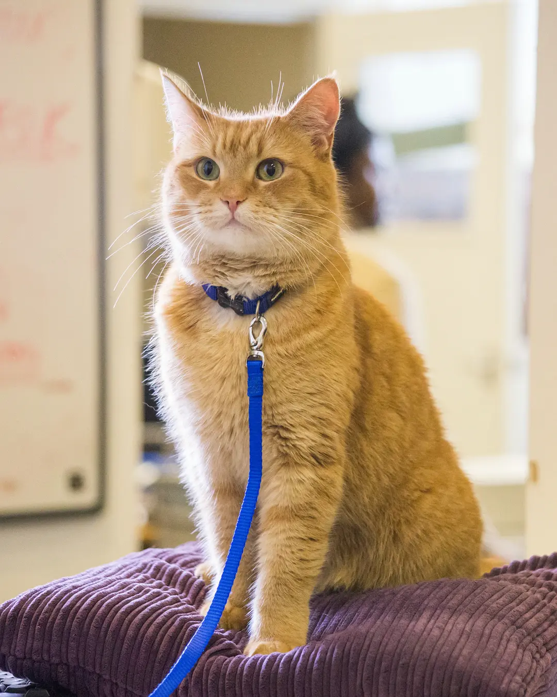

影片简介
该片是一部2016年英國家庭喜剧片，由羅傑·史波提斯伍德执导，改編自詹姆士·伯恩的同名书籍。由路克·索德威飾演詹姆士·伯恩，鮑伯（Bob）飾演牠自己。
剧情简介
故事敘述詹姆士·伯恩是名戒毒者，經濟狀況不佳的他常在街頭表演賣藝。某日，詹姆士在家中發現了受傷的橘貓，鄰居女孩將橘貓取名為「鮑伯」（Bob）詹姆斯並細心的照料牠。詹姆士在找到失主前，時常帶著鮑伯到街上和自己一起賣藝，而獲得了不少關注和歡迎。而兩人還共度了歡樂和詹姆士毒癮發作的痛苦時光；為此，詹姆士和鮑伯漸漸地產生了深刻的奇妙友誼。
参演演员
- 路克·索德威 飾 詹姆士·伯恩（James Bowen）
- 鮑伯（Bob） 飾 牠自己
- 露塔·格德米納斯 飾 貝蒂（Betty）
- 喬安·佛洛格 飾 薇爾（Val）
- 安東尼·希德 飾 奈傑爾·伯恩（Nigel Bowen）
- 詹姆士·伯恩 飾 讀者（客串）
影片评价
该片中一只猫改变一位社会边缘人一生的情节，具备鼓舞人心的正向能量。该片不仅是猫奴们的话题焦点，就算没有养过猫的观众，也会被片中的温馨情节感动到眼眶泛泪。尤其导演这次运用Bob的主观视角作为拍摄画面也具新鲜感，是一部疗愈系暖心电影 。（中时电子报评）
尽管影片情节处处都可预测，但这仍然是一部狡猾的颠覆性影片，从头至尾都在刻画詹姆斯在伦敦冰冷街头的挣扎，以及人群们的冷漠 。（ScreenDaily评）
该片回到了陪伴加救赎的老路上，并没有回避主人公鲍文戒除毒瘾时的黑暗面。（旧金山纪事报评）
对原著做了一些电影化的改动，但依然是普通生活见真情，陪伴的力量冲破一切，坐在银幕前都能感觉那股强大的真情 。（The Hollywood News评）
剧照

鲍勃生平
- 2015年，出演电影饰演自己。
- 2020年6月15日，猫咪鮑伯因车祸去世，享年至少14岁。